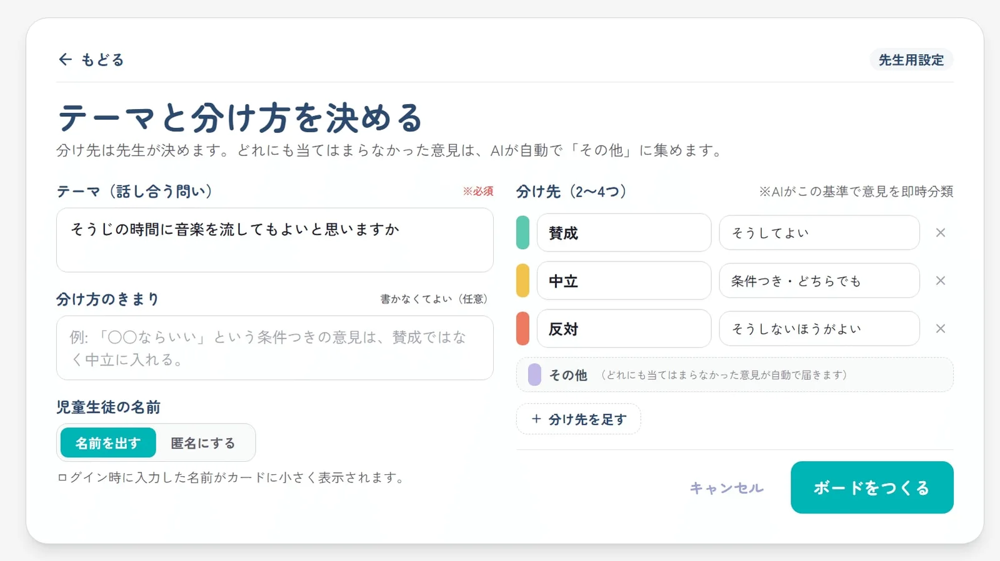

体験
付箋を集めて黒板に貼る作業を、投稿と同時に進む分類へ置き換えている。分類の基準は先生が授業ごとに決め、AIはその基準で振り分けるだけである。
- 「その他」が必ず末尾に付く。作者は、逃げ場がないと意見が無理に分類されてしまうから、と理由を書いている。当てはまらないという結果を、分け先のひとつとして受け止めている。
- 不適切と検知された投稿は削除されない。先生の画面に「内容は最初は目隠しされています」という注記付きで残り、クリックで中身を確かめて「問題がないので再送する」か「削除」を選ぶ。電子黒板で画面を共有している場面を想定し、確認の操作そのものがクラスに見えないようにしている。
- 作者は「AIに最終判断をさせないようにしています」と書いている。検知は止めるだけで、戻すか消すかは先生が決める。
- 記事では、デモの実行中に右側がJevの推論ログへ切り替わり、1件ごとの処理時間、確信度、判定結果が並ぶと説明している。このログを示す作者の動画は、調査時点で非公開になっており、掲載できる画面は得られなかった。確信度が低い意見を画面上でどう扱うかは、記事からは分からない。
- 分け先の中で似た意見をまとめて見出しを付ける機能もある。見出しの生成はGeminiが受け持つと作者は書いている。
キャプチャ
{kind=link}

（原寸の画像を開く）見る箇所分け先の名前と説明、自動で付く「その他」、「分け方のきまり」、記名と匿名の切り替え。投稿ボードと先生用アラート画面は記事本文で確認したが、参加コード・QRコード・投稿者名が映るため掲載していない
入力から画面の変化まで
-
判断への入力
先生が決めたテーマ、2〜4つの分け先とその説明、任意の「分け方のきまり」（例:「曲によるという意見は『中立』に入れてください」）。そこへ児童生徒が300文字までの意見を送る。
-
Jevの判断
意見を、先生が決めた分け先か「その他」のどれかへ振り分ける。暴言や誹謗中傷にあたる投稿の検知もAIが行う。記事は「グループ名生成はGeminiに、分類はJev」と書いているが、検知にどのモデルを使うかは明記していない。
-
結果がUIをどう変えるか
意見はカードになり、線をつたって分け先へ移る。分け先には件数と人数が出る。不適切と検知された投稿は児童生徒側で「提出できていません」になり、先生の画面にだけ目隠し付きで残る。
- 判断型の見立て
- Choice推定
- 先生が決めた2〜4つの分け先と「その他」から1つへ振り分ける動作からの見立て。記事は質問の型を明記していない。不適切投稿の検知に使う型も不明。
Jevとの適合
基準をその場で文章として決め、短い文を次々に振り分ける用途は、候補が限られ、結果が画面上の位置として確かめられる。先生が分け先を開いて中身を読めば、誤った振り分けに気づける。ただし、振り分けの正しさ、児童生徒の実際の文章での挙動、誤検知の頻度は、記事にも示されておらず、この作業でも確かめていない。
確認範囲と未確認事項
日本語の作者によるnote記事と、記事内の画面画像を確認。公開サイトは先生用トップの初期画面だけを開き、ボードの作成、デモの実行、投稿は行っていない。参加コード・QRコード・投稿者名が映る画面は掲載せず、個人・アクセス情報を含まない設定画面だけを引用した。速度についての記述は作者の感想で、この作業では測っていない。
- 確認済み記事本文、記事内の画面画像3枚（ボード、先生用のアラート確認、テーマと分け方の設定）、公開サイトの先生用トップの初期画面（「ボードをつくる」「左右2分割のリアルタイム分類デモを体験する」の導線があること）。公開ページには個人・アクセス情報を含まない設定画面1枚だけを掲載
- 未検証ボードの作成と実際の投稿、分類と検知の正しさ、推論ログの画面（該当の作者動画は非公開）、処理速度、似た意見をまとめる機能の動作、ソースコード
- 推定扱い質問型（分け先から1つを選ぶ動作からChoiceと見立て）。不適切投稿の検知に使うモデルと質問型
- 引用記事内の設定画面を必要な範囲で引用。参加コード・QRコード・投稿者名が映る画像は除外した。権利は作者に帰属する